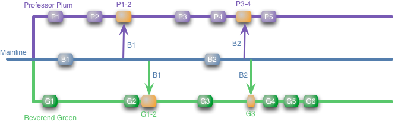

Este artículo es la traducción de un artículo escrito originalmente por Martin Fowler, si encuentras algún error por favor enviameló por mail a ramos.gaston arroba gmail punto com.
Con el surgimiento de los sistemas de control de versión distribuidos (SCVD) como git y mercurial, he estado viendo más conversaciones acerca de estrategias para branching y merging y qué rol juegan con la Integración Contínua (IC). Hay un poco de confusión aquí, particularmente en la práctica de feature branch y cómo esta encaja en la integración contínua.
La idea básica de feature branch es que cuando se comienza a trabajar en una feature (característica o historia si prefiere ese término) ud. usa una rama del repositorio para trabajar en ese feature. En un SCVD, va a hacer esto en su repositorio personal, pero también funciona parecido en un SCV centralizado.
Voy a ilustrar esto con una serie de diagramas. Tengo un proyecto compartido, en color azul, y dos desarrolladores, coloreados en púrpura y verde (los nombres de los desarrolladores son Reverendo Green y Profesor Plum).
Estoy usando cajas de color etiquetadas (ej: P1 y P2) para reprensentar commits locales en el branch. Flechas entre branches para representar merges entre branches, las cajas están coloreadas con naranja para que se destaquen. En este caso hay actualizaciones, digamos un par de bug fixes aplicados a la línea principal (supongamos que son hechos por el Sr Peacock). Cuando esto ocurre nuestros desarroladores lo mergean en su trabajo. Para darle a esto algún sentido de tiempo, voy a asumir que estamos mirando unos pocos días de trabajo aquí, con cada desarrollador comiteando a su branch local aproximadamente una vez al día.
Para asegurar que las cosas están funcionando correctamente, ellos pueden ejecutar construcciones y tests en su branch. De hecho.voy a asumir que cada commit y merge se lleva a cabo con un build y test automático en el branch en el que está.
La ventaja del feature branching es que cada desarrollador puede trabajar en su feature y estar aislado de los cambios que hay en otros lugares. Ellos pueden traerse (pull) los cambios desde la línea principal a su propio ritmo, asegurando de no romper el flujo de su feature. Además de que permite al equipo seleccionar cuales features se van a entregar.
Si el Reverendo Green se demora mucho, podemos entregar sólo con los cambios del Profesor Plum. O quizás deseemos retrasar la entrega de la feature del Profesor Plum por que no estamos seguros de que esta funciona de la forma en la que queremos entregarla. En este caso solo le decimos al profesor que no vamos a mergear sus cambios a la línea principal hasta que estemos listos. Esto se llama cherry-picking, el equipo decide cuales son las features que se van a mergear entes de la entrega.
Por más atractiva que se vea la imágen, puede haber problemas en el futuro.

A pesar de que nuestros desarrolladores puedan desarrollar sus features en forma aislada, en algún punto su trabajo va a tener que ser integrado. En este caso el Profesor Plum fácilmente actualiza la línea principal con sus cambios. No hay merge aquí por que él ya ha incorporado los cambios de la línea principal en su propio branch (habrá un build). Sin embargo las cosas no son tan simples para el Reverendo Green, el necesita mergear todos sus cambios (G1-6) con todos los cambios del Profesor Plum (P1-5).
(En este punto muchos usuarios de SCVD podrían sentir que me falta algo o que este es un punto de vista simple o quizás simplista de feature branching. Voy a mostrar un esquema más complicado más adelante).
He hecho esto como una caja grande de merge ya que es el merge del miedo. Podría estar bien, los desarrolladores podrían haber estado trabajando en partes completamente separadas del código base sin interacción, en cuyo caso el merge saldrá bien. Pero podrían haber estado trabajando en partes que interactúan, en cuyo caso aquí yacen dragones.
Los dragones pueden aparecer en muchas formas, y las herramientas pueden ayudar a matar algunos de ellos. El más obvio de los dragones es la complejidad de mergear el código fuente y lidiar con conflictos tales como desarrolladores editando los mismos archivos. Los SCVD en realidad manejan esto bastante bien, casi como mágicamente. Git tiene bastante fama en tratar con merges complejos. Tanto es que así que los conflictos textuales de merging son mucho mejores de lo que solían ser - de hecho voy a ir mas allá y voy dejar de lado los conflictos textuales para los fines de este artículo.
El problema que me preocupa es un conflicto semántico. Un ejemplo simple de esto es que el Profesor Plum cambia el nombre de un método que el código del Reverendo Green llama. Las herramientas de refactoreo permiten renombrar un método de manera confiable, pero sólo en tu código base. Entonces si G1-6 contiene nuevo código que llama a Foo, el Profesor Plum no puede llamarlo en su código base ya que no lo tiene. Sólo lo vas a saber en el merge grande.
El renombrado de una función es un caso relativamente obvio de un conflicto semántico. En la práctica pueden ser mucho más sutiles. Los tests son la clave para detectarlos, pero cuanto más código haya para mergear, más probable será que haya conflictos y más difícil será arreglarlos. Es el riesgo de los conflictos, particularmente los conflictos semánticos, que hace que los merge grandes den miedo.
Este miedo a los grandes merges además actúa de disuasivo del refactoreo. Mantener el código limpio es un esfuerzo constante, para hacerlo bien se requiere que todos mantengan un ojo atento para la suciedad y la arreglen en cualquier lugar que la vean. Si embargo este tipo de refactoreo en un feature branch es torpe por que hace el Gran Merge del Miedo mucho peor. El resultado que vemos es que los equipos que usan feature branch se alejan de los refactoreos lo que lleva a bases de código más sucio.
En realidad veo esto como una razón decisiva de por qué Feature Branching es una mala idea. Una vez que un equipo tiene miedo de refactorear para mantener su código sano están en un espiral descendente con un final no muy felíz.
Para resolver estos problemas es que se diseñó la Integración Contínua. Con Integración Contínua mi diagrama se ve como este:

Hay mucho más merge hechos aquí, pero el merging es una de esas cosas que son mucho más fáciles de hacer frecuentemente y pequeños en vez de rara vez y largos. Como resultado si el Profesor Plum está cambiando alguna parte del código de la cual el Reverendo depende, el Reverendo la va encontrar temprano, en cuanto mergeó en P1-2. En este punto el sólo ha modificado G1-2 para trabajar con los cambios, en vez de G1-6.
IC no sólo es efectiva para eliminar el problema de los grandes merges, sino también es un vital y efectivo mecanismo de comunicación. En este scenario el conflicto podría relamente aparecer cuando el Profesor Plum mergee G1 y se dé cuenta que el Reverendo Green está construyendo activamente sobre las bibliotecas de Plum. En este punto el Profesor Plum puede ir y buscar al Reverendo Green y discutir como sus dos features intereactúan. Podría ser que el feature del Profesor Plum requiera algunos cambios que no encajan bien con los cambios del Reverendo Green. Mirando ambas features pueden llegar a un mejor diseño que afecte ambos flujos-de-trabajo. Con el aislado feature branch nuestros desarrolladores no descubren esto hasta que es tarde, probablemente demasiado tarde para hacer mucho al respecto. Comunicación es uno de los factores claves en el desarrollo de software y una de las características más importantes de la IC es que facilita la comunicación humana.
Es importante notar que, la mayoría del tiempo, feature branching de esta forma es un enfoque distinto al de IC. Uno de los principios de IC es que todos commitean a la línea principal cada día. Así que a menos que feature branch dure menos de un día, ejecutar feature branch es un animal diferente que IC. He escuchado gente decir que están haciendo IC por que ejecutan construcciones, quizás usando un servidor de IC, sobre cada branch en cada commit. Eso es construcción contínua, es algo bueno, pero no hay integración, entonces no es IC.
Antes he dicho entre paréntesis, que hay otras maneras de hacer feature branching. Digamos que el Profesor Plum y el Reverendo Green toman el té juntos al comienzo del ciclo. Mientras conversan descubren que estan trabajando en features que interactúan. En este punto ellos quizás pueden elegir integrarse mutuamente directamente, así.
Con este enfoque ellos sólo pushean a la línea principal al final, como antes. Pero mergean frecuentemente el uno con el otro, entonces esto evita el Gran Merge del Miedo. El punto aquí es que la cuestión principal con el aislado esquema de feature branch es su aislamiento. Cuando aislás los features branches, hay un riesgo de un conflicto feo que crece sin que te des cuenta. Entonces el aislamiento es una ilusión, va a romperse dolorosamente tarde o temprano.
Así que ¿es esto más integración ad-hoc una forma de IC o es un animal completamente diferente?. Pienso que es un animal diferente, de nuevo el punto clave de IC es que todos integran a la línea principal todos los días. Integrando a través de features branches, lo cual llamaré integración promiscua (IP), no involucra o necesita una línea principal. Creo que es una diferencia importante.
Veo IC primordialmente como darle nacimiento a un release candidate en cada commit. El trabajo de un sistema de IC y proceso de deployment es refutar la preparación-para-producción de un release candidate. Este modelo se basa en la necesidad de tener alguna línea principal que reprensente la imágen más actualizada y completa de lo actual compartido.
-- Dave FarleyEntonces si son diferentes ¿es IP mejor que IC?, o más realista, ¿bajo qué circunstancias es IP mejor que IC?
Con IC, perdés la habilidad de usar SCV para hacer cherry picking. Cada desarrollador está tocando la línea principal, entonces todas las features crecen en la línea principal, Con CI, la línea principal está siempre sana, entonces en teoría (y casi siempre en la práctica) podés entregar de forma confiable después de cada commit. Tener una feature por la mitad o una feature que todavía no querés entregar no dañará el otro software, pero podría requerir algún enmascaramiento si no querés que esté visible en la interface de usuario. Esto podría ser tan simple como incluir un item del menú en la IU para lanzar esa feature.
IP puede ser un punto central aquí. Le permite al Reverendo Green la opción de elegir cuándo incorporar los cambios del Profesor Plum. Si el Profesor Plum hace algunos cambios al núcleo de la API en P2, entonces el Reverendo Green puede importar P1-2 pero dejar los otros hasta que la feature del Profesor Plum se coloque en la entrega.
Una preocupación con todas estas opciones y elecciones es que IP hace realmente difícil el seguimiento de quién está haciendo qué en su branch. En la práctica, parece que las herramientas resuelven la mayoría de los problemas. SCVDs mantienen una pista limpia de cambios y sus origenes y se pueden dar cuenta de que cuando el Profesor Plum se trae G3 el ya tiene G2 pero no tiene B2. Puedo haber cometido errores dibujando el diagrama a mano, pero las herramientas mantienen un seguimiento de estos cambios bien.
En general, sin embargo, no creo que el cherry picking con SCV sea una buena idea.
Feature Branching es la arquitectura modular del hombre pobre, en lugar de construir sistemas con la habilidad de activar o desactivar características en tiempo de ejecución o durante el deploy, se asocian al VCS, proveyendo este mecanismo mediante el merging manual.
-- Dan Bodart
Prefiero mucho más diseñar el software de tal forma que sea fácil habilitar o deshabilitar features mediante cambios en la configuración. Dos técnicas para esto son FeatureToggles (CambioDeCaracterística) y BranchByAbstraction (RamaPorAbstracción). Estos requieren que pienses que necesita ser modularizado y como controlar esa variación, pero hemos encontrado que resultado es mucho menos sucio que confiarle esto al SCV.
La razón principal que me pone nervioso acerca de IP es la influencia en la comunicación humana. Con IC la línea prinicipal actúa como un punto de comunicación. Aún si el Profesor Plum y el Reverendo Green nunca hablasen, van a descubrir el conflicto naciente - un día después de la formación. Con IP tienen que avisar que están trabajando en código que interatúa. Una línea principal actualizada hace fácil para alguien estar seguro de que están integrando con todos, no se tiene que hurgar para saber quién está haciendo qué - entonces hay menos posibilidad de que algunos cambios estén siendo escondidos hasta una integración tardía.
IP surgió del trabajo open-source, y podría ser que el ritmo menos intensivo del open-source sea un factor aquí. En un trabajo de tiempo completo, vos trabajás varias horas por día en un projecto. Esto hace que sea fácil trabajar en las features con prioridad. Con un projecto open-source la gente trabaja una hora, y la próxima hora algunos días después. Una feature puede que tome algún tiempo para ser terminada por un desarrollador mientras que los otros desarrolladores con más tiempo están disponibles como para dejar features en un estado de entrega antes. En esta situación cherry-picking puede ser más importante.
Es importante darse cuenta de que las herramientas que se utilizan son en gran parte independientes de la estrategia de integración. A pesar de que mucha gente asocia SCVDs con feature branching, pueden ser usados con IC. Todo lo que hay que hacer es marcar un branch en un repositorio como la línea prinicipal. Si todos pullean y pushean a esta todos los días, entonces tienes una línea principal de IC. De hecho con un equipo disciplinado, normalmente preferiría usar SCVD en un proyecto con IC en vez de uno centralizado. Con un equipo menos disciplinado me preocuparía que un SCVD podría empujar a la gente hacia branches de larga vida, mientras que con un SCV centralizado y una reticencia a los branches los empujaría hacia commits frecuentes en la línea principal. Paul Hammat puede tener razón: "Me pregunto, sin embargo, si un equipo no debe ser hábil con el desarrollo basado-en-la-rama-principal antes de moverse a uno distribuido."